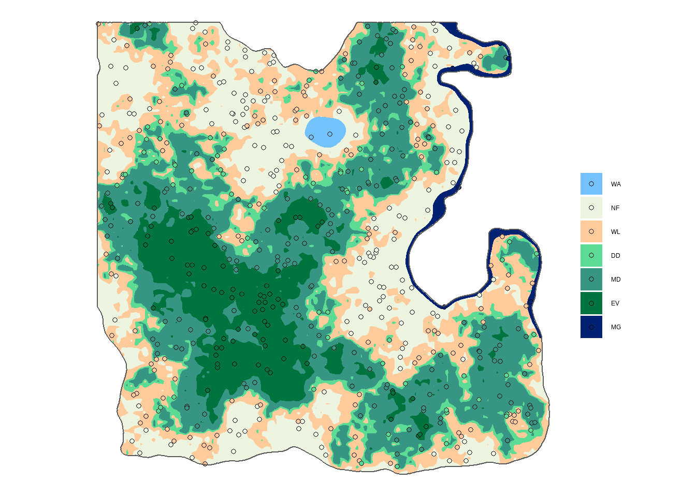

6 Random Sampling
Complete random sampling designs have a number of disadvantages and are generally not recommended at a national scale. We will still relocate our 558 plots randomly to compare different sampling designs.
Demo
The equivalent of st_make_grid() for random sampling is st_sample(). Every time st_sample() is used a new set of random locations are created. To get the same random allocation every time we run the code we need to set a “seed” and the function set.seed(). In the example we will use set.seed(10) but feel free to change or remove at will the chose seed number in the practice below.
As the plot locations are completely random, we have no control over how many plots are going to land on forest versus non-forest land. We can apply two possible strategies to reach our target number of plots inside forest land:
- Filter out non-forest polygons and make the sample size equal to the total number of plots in forest land from our 4 x 4 km sampling grid
nplot4_total$n. - Make the sampling size equal to the original number of points in a 4 x 4 km grid
nrow(sf_points4)and accept that the result may be different from the systematic sampling.
We can anticipate that the second solution is better if you are also interested in non-forest land, although there is no guarantee you will have enough plots in each land cover. We will favor option 1 as our primary target is forest carbon stock.
As sf objects behave similarly to tibbles, the tidyverse function filter() will allow us to prepare a forest only shapefile.
sf_forest <- sf_lc %>%
filter(lc %in% c("EV", "MD", "DD", "WL", "MG"))
We can now create the random points based on the sf_forest canvas.
set.seed(10)
sf_points_rd <- st_sample(x = sf_forest, size = nplot4_total$n) %>%
st_as_sf()
We can then extract the land cover at the plots’ location…
sf_plot_rd <- sf_points_rd %>%
st_join(sf_lc) %>%
mutate(lc = fct_reorder(lc, lc_id)) %>%
filter(!is.na(lc))… And map them.
ggplot() +
geom_sf(data = sf_lc, aes(fill = lc), color = NA) +
geom_sf(data = sf_plot_rd, aes(fill = lc), shape = 21) +
geom_sf(data = sf_admin, fill = NA) +
scale_fill_manual(values = pal) +
labs(fill = "", color = "") +
theme_void()
If at a first glance the plot distribution shows a decent coverage of the new land, it is interesting to calculate the number of plots per land cover category to confirm this impression.
nplot_rd <- sf_plot_rd %>%
as_tibble() %>%
group_by(lc) %>%
summarise(n = n())
nplot_rd# A tibble: 5 x 2
lc n
<fct> <int>
1 WL 93
2 DD 51
3 MD 108
4 EV 54
5 MG 7
Practice
Your turn! In the console below, test different seed numbers and visualize the results.
- Create the points, choose whatever seed number you want:
## Console
set.seed(___)
sf_points_rd2 <- st_sample(x = ___, size = ___) %>%
st_as_sf()## Solution
set.seed(100)
sf_points_rd2 <- st_sample(x = sf_lc, size = nplot3_total$n) %>%
st_as_sf()- Add the land cover information:
## Console
sf_plot_rd2 <- sf_points_rd2 %>%
st_join(___) %>%
mutate(lc = fct_reorder(lc, ___)) %>%
filter(___)## Solution
sf_plot_rd2 <- sf_points_rd2 %>%
st_join(sf_lc) %>%
mutate(lc = fct_reorder(lc, lc_id)) %>%
filter(!is.na(lc))
- Show the plot locations on a map:
## Console
ggplot() +
geom_sf(data = sf_lc, aes(fill = lc), color = NA) +
geom_sf(data = ___, aes(fill = ___), shape = 21) +
geom_sf(data = sf_admin, fill = NA) +
scale_fill_manual(values = pal) +
labs(___, ___) +
theme_void()## Solution
ggplot() +
geom_sf(data = sf_lc, aes(fill = lc), color = NA) +
geom_sf(data = sf_plot_rd2, aes(fill = lc), shape = 21) +
geom_sf(data = sf_admin, fill = NA) +
scale_fill_manual(values = pal) +
labs(fill = "", color = "") +
theme_void()
- Calculate the number of plots per land cover type:
## Console
nplot_rd2 <- ___ %>%
as_tibble() %>%
group_by(___) %>%
summarise(n = n())
nplot_rd2## Solution
nplot_rd2 <- sf_plot_rd2 %>%
as_tibble() %>%
group_by(lc) %>%
summarise(n = n())
nplot_rd2# A tibble: 6 x 2
lc n
<fct> <int>
1 NF 136
2 WL 125
3 DD 57
4 MD 151
5 EV 80
6 MG 9
Well done! We will keep these results for later and move on with uneven systematic sampling.